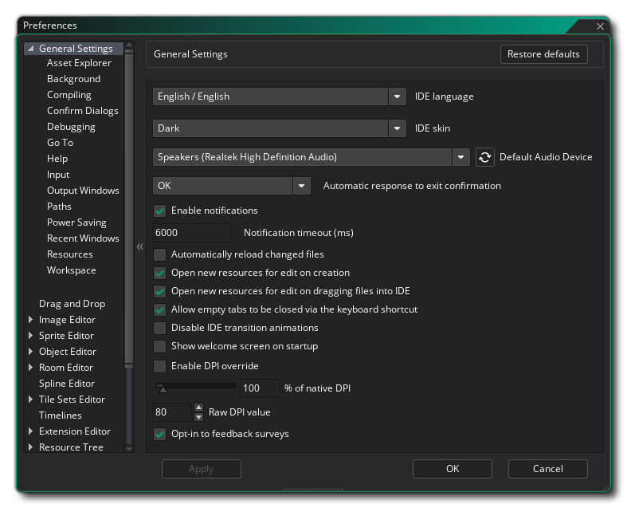

Das Preferences-Fenster ist ein wesentlicher Bestandteil von GameMaker Studio 2, da Sie hier Ihre Erfahrungen mit der IDE einrichten und anpassen sowie spezifische Plattform-SDKs usw. einrichten können. In diesem Abschnitt werden die IDE-spezifischen Bereiche von behandelt Das Einstellungsfenster - für die einzelnen Zielplattformen lesen Sie bitte den Abschnitt " Target Platform-Präferenzen". Beachten Sie, dass Sie nach dem Ändern der Einstellungen in diesem Fenster auf die Schaltfläche Anwenden klicken müssen, damit sie wirksam wird.
Wenn Sie nach dem Ändern der Optionen zum Anpassen von GameMaker Studio 2 an Ihren eigenen Geschmack die von Ihnen festgelegten Einstellungen sichern möchten, müssen Sie in den Ordner wechseln %AppData%/GameMakerStudio2/<your_account_name>/ Kopieren Sie dann die folgenden beiden Dateien an einen sicheren Ort:
- local_settings.json
- cloud_settings.json
Wenn Sie jedoch die von Ihnen geänderten Einstellungen zurücksetzen möchten, klicken Sie oben im Fenster auf die Schaltfläche Restore Defaults. Beachten Sie, dass hierdurch nur die Standardeinstellungen für den gerade bearbeiteten Abschnitt wiederhergestellt werden.
Sie können die GameMaker Studio 2 Voreinstellungen über das Menü Datei oben links in der IDE öffnen: 
Sobald das Fenster "Einstellungen" geöffnet ist, stehen Ihnen folgende Optionen zur Verfügung: